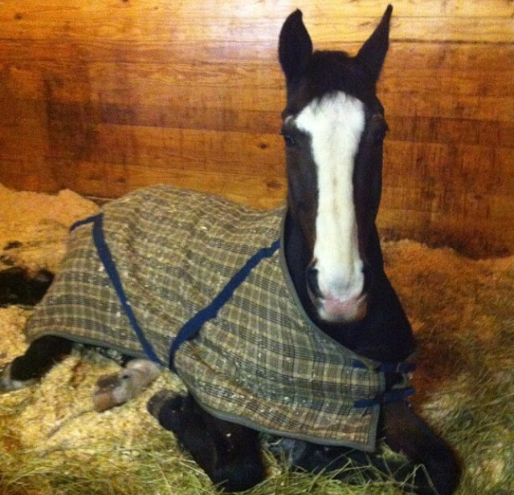
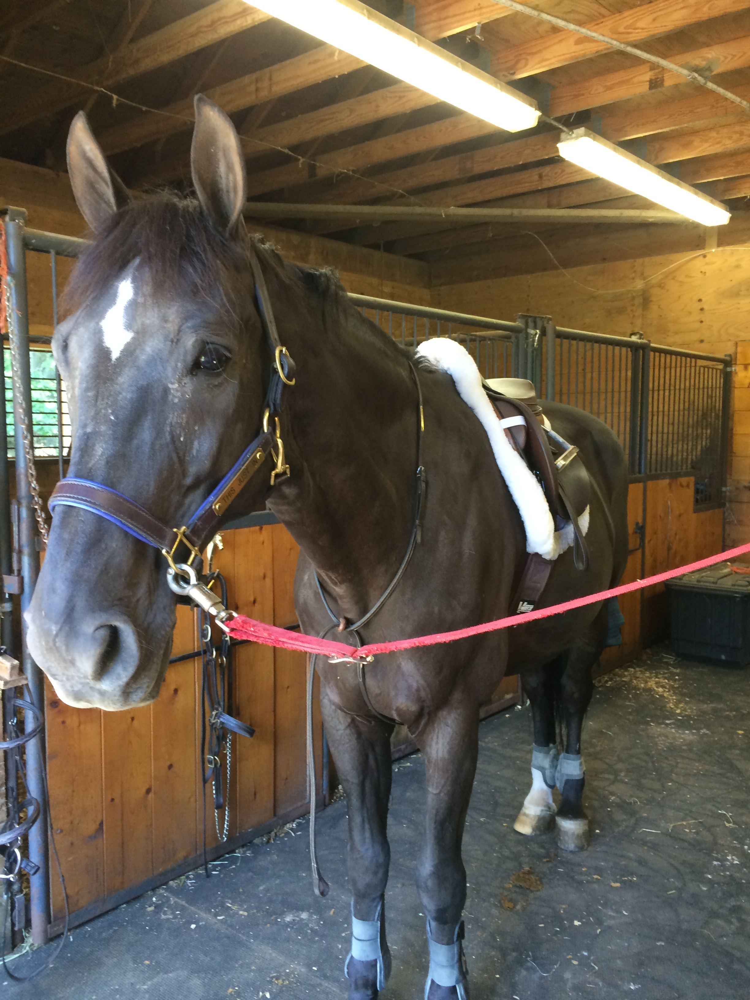
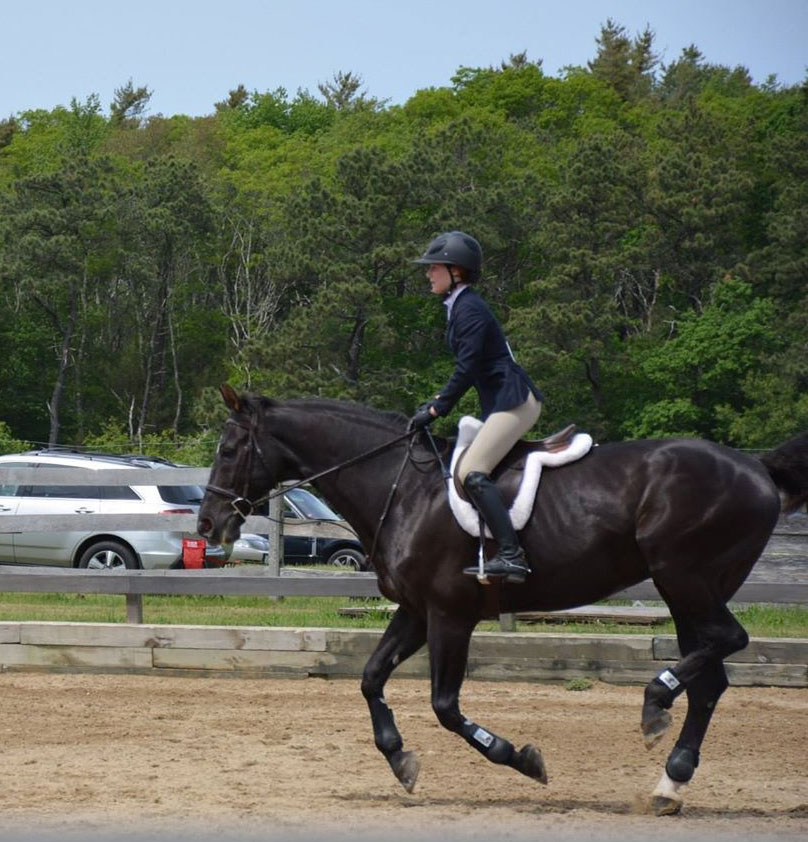
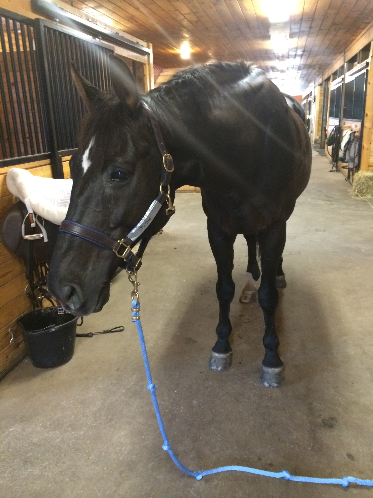

My first horse is named Ludo. I got Ludo when I was 12 years old! I had been asking my parents for Ludo for almost a full year, he was my dream horse, 17 hand black horse who was crazy. He was 20 years old and was jumping 3ft. I didn't relize how amazing that was untill I got him and eventually I relized how old and fragile he really was. I loved him to death, I had him for 6 months when someone took him to a horse show. The horse show was to much for him, even though he acted like he could do it, he couldn't, and he became lame. At first I thought it was a temporary thing and that I could still eventually show him over the summer but he never got better, eventually the owner, a college student at Boston College University decided it was time for Ludo to retire. I never got to show Ludo but I learn SO MUCH from him and he was a perfect horse to have! I miss him like crazy! A few months after he went to his retirement home in kentucky his owner sent an adorable picture of him to me. Ludo looked happy as ever! I'm glad he is having a lovely life out in the acers of grass feilds in kentucky. I will always Love Ludo.

My secound horse/the horse I own right now is named Justin!He is a beutiful 15 year old Oldenburg horse, my trainer found him and out of coincidence he was a 17.2 hand black horse. I have had him for 6 months and i'm going to have him for another 6 months! I am so exited her is the most perfect horse. I love him. I have been to a few shows with him, he is amazing, he isnt flawless no horse is but he listens to me, I know that Justin loves me too. He is great and so trust worthy, he is much, much, different than Ludo, I love both of them but Justins comforting and I don't feel like he is going to take off at any moment. With Justin I can work more on my own technique than his, but not always. This summer I took Justin down to a barn in North Kingstown Rhode Island, where I have a summer house so I can ride him during the summer. The barn is private


